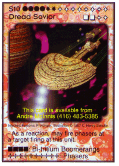

| Skeeve's Home | Table of Contents | Background | Decks & Empires | Discussion Forum |
| Cardbase | Card Lists | Promobase | Trade | Calendar |
| Skeeve's Home | Table of Contents | Background | Decks & Empires | Discussion Forum |
| Cardbase | Card Lists | Promobase | Trade | Calendar |
| Basic | Theme Decks | Single Cards | Card Combos | ||||||||||||||||||||||
| A | B | C | D | E | F | G | H | I | J | K | L | M | N | O | P | Q | R | S | T | U | V | W | X | Y | Z |
Before the Indirigan promo run, I considered the Indirigan tribe ships to have engagement costs that are more expensive than average. Now there are quite a few ships available which provide a lot of bang for the buck in the way of special abilities and weaponry. They are still an excellent source of large minor empire ships. In my normal 100-card deck mix, with 20 ships, I can put in 12 main-empire ships and six Indirigan ships. I usually use two tribes, one being Lone Wolf and the other depending on what I'm doing with the deck.
Key cards:
I am very fond of the S7 Andromeda Bound Munitions Cruiser and to a lesser extent the S7 Andromeda Bound Battlecruiser. These work very well in Corporate, Geko, P.O.T. and anywhere else you need a large supply of ammunition.
This is one of the Indirigan promotional run tribes.
The Council of Six have the nifty feature on most of their ships Occurance cards do not affect the ship stack. The question is how to turn this to your advantage: can you say R/O1 Time Skip or R/O3 Crinkled Timeline? I knew you could. The down side to this immunity is no O7 Surprise Attack, R/O4 Repair Delivery and the like. Back to the up side, no Wandering Desires or O9 Ship Collisions! Cards like R/O8 Cessation of Fire still work since they don't directly affect the ship, but (in this case at least) the Weapons Fire Phase.
Key cards:
This is one of the Indirigan promotional run tribes.
They also make an excellent empire for a carrier fleet deck. Why? Four of the ten ships in the tribe are carriers: an S6, S7, S8 and S9. Unfortunately, the two largest are also prototype class cards (see the rules page for the rules regarding prototype and conjectural class cards). This makes them undesirable as the main empire unless your are going to exploit to the fullest their other feature: When played disengaged, move a card from the deck under this card. When engaged, expose the card and place it on this ship if eligible. Otherwise add it to the hand. This rules text appears on four of the six ship types in the tribe. This makes the carrier deck quite fast. You can very easily get fighters and shuttles into play without using up card draws and card plays.
The S10 Battleship itself is quite useful in a judo-esque deck concept. It and three other of the Indirigan tribe flagships (S10 Council of Six Tribe Battleship, S10 Dread Saviour, S10 Intrepid Wanderer) have phasers which may fire in reaction to the unit being targetted. This is a very useful addition to a particular type of Zedan deck.
Key cards:
The Grand Chieftain's ship mix contains both an S4 and S8 carrier that are ideal for a carrier-based deck design with the Indirigans as the primary empire.
Key cards:
This is one of the Indirigan promotional run tribes.
Note that the S10 Intrepid Wanderer does not mention it's tribe's name in the card title. Under the "ships with an empire's card background are ships of that empire" rule, this ship is a member of the Gray Death tribe.
The Gray Death make an excellent minor empire in a boarding party or "borrowing" deck (think Leopan raiding parties). Also note that their S3 Escort states that it can intercept damage applied to ships of strength 6 or greater, not the usual 7. And again, note that their heavy weapons are Aesthetic weapons (see below).
The S10 Intrepid Wanderer itself is quite useful in a judo-esque deck concept. It and three other of the Indirigan tribe flagships (S10 Council of Six Tribe Battleship, S10 Garshain Battleship, S10 Dread Savior) have phasers which may fire in reaction to the unit being targetted. This is a very useful addition to a particular type of Zedan deck.
Key cards:
Aesthetic Weapons: When targetting a combined terrain may target each specific terrain card of that terrain stack, allowing it to be destroyed separately. Aesthetic damage to part of a terrain stack should be tracked separately but may not be used to destroy the basis of any part of the combined terrain stack.
 This is one of the Indirigan promotional run tribes.
This unfortunate tribe's battleship, the S10 Dread Savior fails to name its tribe in the card title. It is still a member of the tribe under the "ships with an empire's card background are ships of that empire" rule.
The S10 Dread Saviour itself is quite useful in a judo-esque deck concept. It and three other of the Indirigan tribe flagships (S10 Council of Six Tribe Battleship, S10 Garshain Battleship, S10 Intrepid Wanderer) have phasers which may fire in reaction to the unit being targetted. This is a very useful addition to a particular type of Zedan deck.
Key cards:
A single ship tribe. Even though this card does not have the standard rules text for carriers,
All fighters and shuttles played on a
carrier have their phasers rearmed
during the Engagement Phase.
it is considered to be a carrier. And of course, an S10 carrier is very useful in a carrier fleet deck.
Key cards:
The Lone Wolf tribe is the obvious choice for a second tribe in any Indirigan deck. They don't have to shoot at any other Indirigan ships in your fleet and they have nice, big ships..
Key cards:
This is one of the Indirigan promotional run tribes.
Key cards:
The Nagaridni Pirates have a number of interesting ships which were designed by Tony Medici as promotional cards.
This is one of the Indirigan promotional run tribes.
A tribe fielding only patrol ships? Interesting.
An as-yet-unseen tribe.
Key cards:
The Vicious Six work well in decks that have resource theft as a theme, usually those based on either Bolaar or Leopan. Their economy requirement for engagement meams that a typical Vektrean deck will usually be able to power them quite easily as well.
Key cards:
This is one of the Indirigan promotional run tribes.
The most important thing to know about this tribe is that they count as pirates. Pirate Captains, Pirate Hordes, all the cool pirate-only cards, work for these bad boys. Combined with their technology adaptation ability, they are able to use most of the Bolaar tips and tricks.
The ability to use foreign technology makes this tribe a possible adjunct to a "borrowing" deck. Also note that as part of their attempts to pirate the technology of other races, they have disguised their battleship, the S10 Pirate Battleship by not associating their empire's name with the card. I'd say this is errata'd.
S2 Patrol Ship + E9 Hologram
Use this combo to place a ship into play just before your turn begins, allowing you engage the ship on your turn.
This is one of the promotional run tribes, but was printed earlier than the Indirigan promotional sets. This set is actually a printer's error and should be included with the Vinciennes Tribe.
Key cards:
This elusive tribe's ships have not yet been spotted. Their chieftain has made an appearance, though.
Key cards: